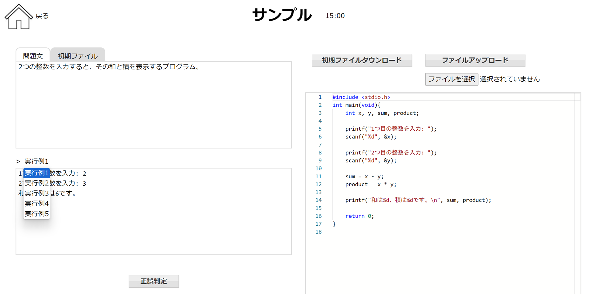
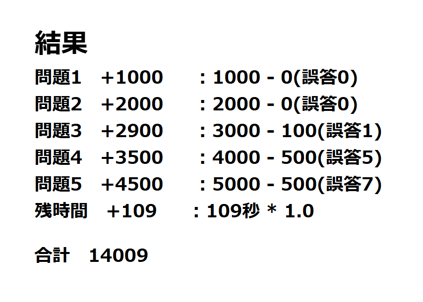

デバッグ演習への意欲向上を目的とした順位付けをしない得点提示式演習の提案
このページでは、以下の論文で提示した手法に基づき実装したデバッグ演習用のWeb applicationのソースコードを公開しています。
- 宮島健太,
篠埜 功,
デバッグ演習への意欲向上を目的とした順位付けをしない得点提示式演習の提案,
日本ソフトウェア科学会第41回大会講演論文集,
立命館大学大阪いばらきキャンパス（OIC）, 2024年9月9日〜12日.
使い方
zipファイルをダウンロードして展開し、
Readme.txtファイルに従ってインストール、実行してください。
スクリーンショット


更新履歴
- 2024年9月9日 version 0.0.1を公開